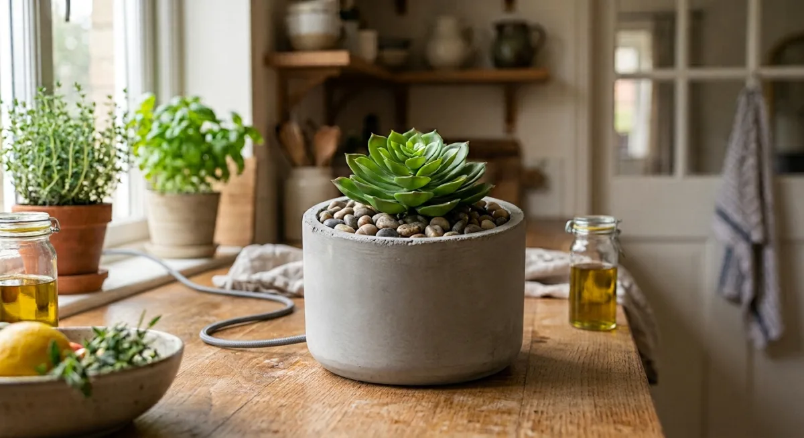
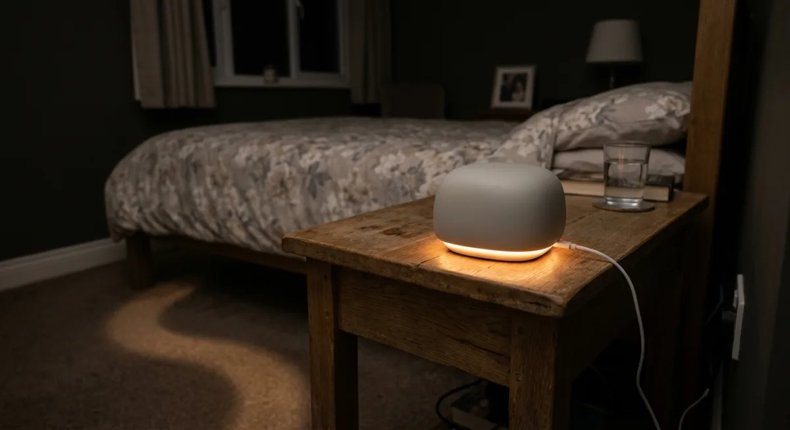
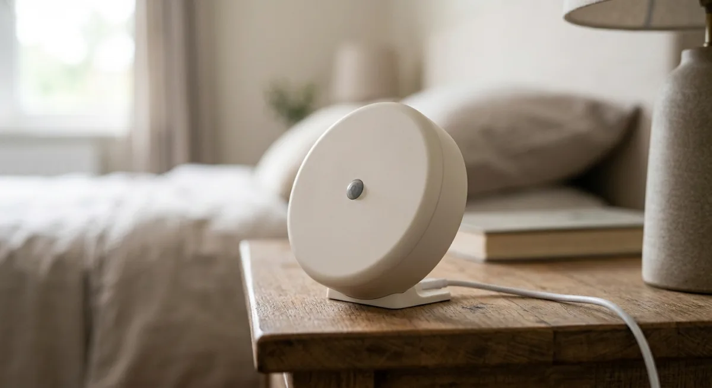
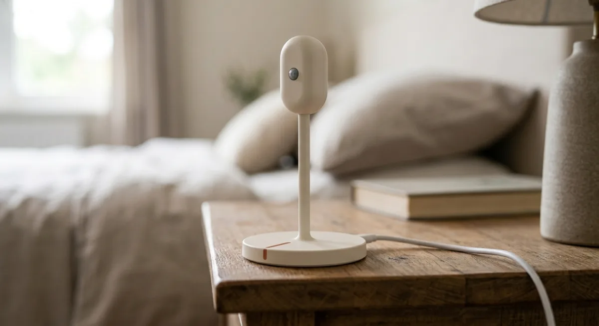
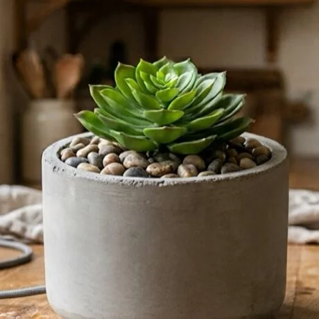

Sensors that look like something you already own. They know a room is in use, when it went quiet, and when someone needs you.

EXAMPLE READING Kitchen · in use now 6h 20mACTIVE TODAYPeople deserve to be looked after without being watched. WavePresence never uses a camera or a microphone. Its sensors only know whether a room is in use, and each one sees only what it needs to.
Every mark is a moment a room was in use. No camera saw it. No microphone heard it. After the first week WavePresence knows the usual shape of a day, and tells you only when the shape breaks.
It plugs in. Nothing is worn, nothing is installed in a wall.
Usual wake time, usual kitchen hours, the chair they doze in.
A fall, a night-time exit, a long silence, or a sensor that went quiet.
All of our sensors hide their technology in style. Pick the sensor that fits your home. A plant for the kitchen counter, a stone for the nightstand, a slim stalk or a disc where you want it out of the way.



You only buy the rooms you care about. The kit finder builds it with you, room by room, and says what each part is for.
Breathing and heart micro-motion, body motion using radar, and heat sensing. This is the one that knows asleep from gone.
Presence and movement only. It tells you which room is in use when the bedroom is empty.
Sits on the floor or under a rug, right where the feet land. The primary sensor that knows someone is up.
Attaches to the door frame and the door. Hears it open and close, so leaving a room is never a guess.
Feels the floor itself. One per floor senses a fall anywhere on it, in any room, with nothing worn.
Catches anyone passing through, which is how you know about wandering between rooms at night.

A bedroom sensor, a floor pressure mat and a door sensor is where most families start. Add rooms as you need them. The kit finder prices yours exactly.
Monitoring, alerts to your Care Circle, the daily report, and the pattern learning that makes any of it mean something. Cancel any time.
Six short questions about who you're looking after and the rooms that matter. You'll see exactly which sensors go where, and why.
Find your kitThat email doesn't look right. Check it and try again.
We couldn't save that. Check your connection and try again.
Not ready to choose? We'll email when kits are ready to ship. No payment now.